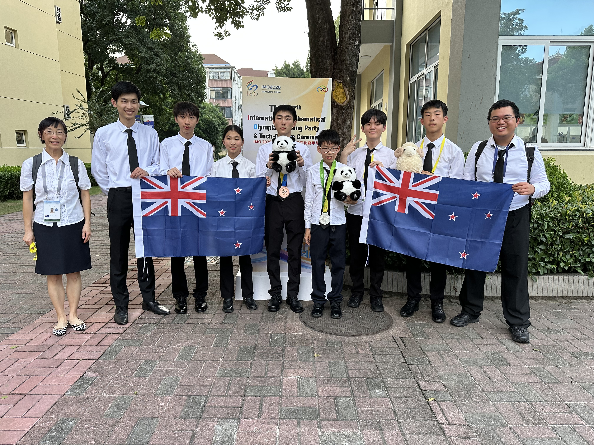

The NZ Mathematics Olympiad Committee is a dedicated committee of University lecturers and students, Mathematics teachers, and interested mathematicians who identify, select and mentor gifted students through an annual programme of participation in international Olympiad competitions to give them an immense kick start to their mathematical careers. In turn former Olympians contribute to the next generations programmes by joining the committee and running the mentor programmes.
The committee is endorsed and supported by the NZ Mathematical Enrichment Trust, the NZ Association of Mathematics Teachers, the NZ Maths Olympiad Students Association, Universities and some companies.
The NZMOC provides activities for the enrichment and advancement of gifted students enrolled in the NZ education system at high school level or below, through their website and hosting an annual week long residential camp in January. From this students are selected to attend the International Mathematical Olympiad in July - the toughest mathematical competition in the world.
First competed for in Romania in 1959 the competition has grown to over 100 countries sending teams of up to six. This makes it the oldest and largest Olympiad competition. New Zealand has competed with distinction since 1988 when it was hosted in Australia.
New Zealand has successfully competed in 39 International Olympiads with 2 – Gold, 18 - Silver, 66 – Bronze and 69 - Honourable Mentions. For full results go to the IMO website.
The 2026 IMO was held in Shanghai, China. We held a pre-IMO camp in Shanghai, and were joined by the Netherlands, Portugal and Columbia.
The 2026 Results were: Guanhan Li was awarded a Silver Medal, Zhiyuan Yu a Bronze Medal, Alston Huang and George Zhao Honourable Mentions. The team finished in 57th place.
